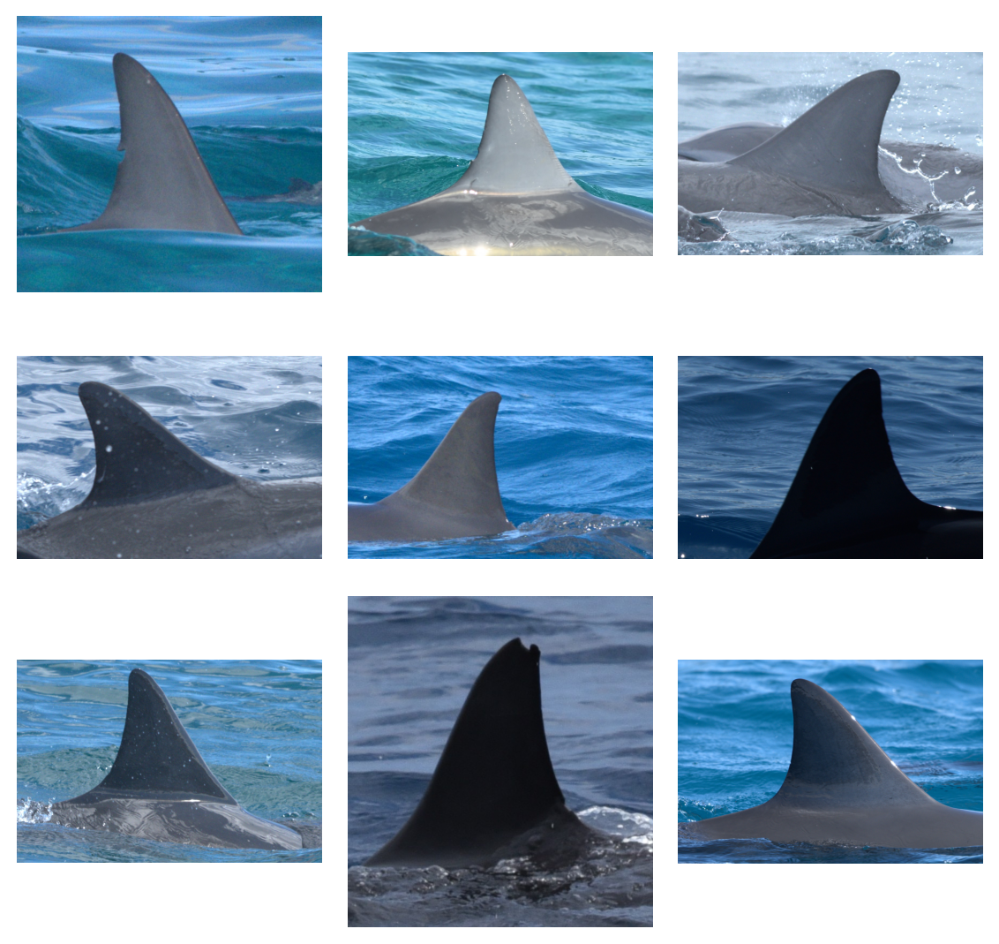

![]()
%%bash
conda create -n pyseter_env
conda activate pyseter_env
conda install pip3
pip3 install torch torchvision --index-url https://download.pytorch.org/whl/cu128
pip3 install pyseterPyseter: A Python package for processing images before photo-identification
Abstract
Photographic identification (photo-ID) is an effective and non-invasive method for studying many aspects of animal ecology. Photo-ID, however, is a labor-intensive process that involves many steps including, but not limited to, grading individuals by the distinctiveness of their markings (useful for partially marked populations), and curating the best image of each individual from each encounter. This latter step is helpful for reducing false negative errors and reducing the labor effort involved in manual or semi-automated identification. We introduce Pyseter, a Python package for automating several of these steps. Pyseter’s extract module allows users to extract feature vectors from images with AnyDorsal, an individual identification algorithm that has been trained and tested on 24 species of cetacean. The grade module has experimental features for evaluating distinctiveness with information in the feature vectors. The sort module includes two clustering algorithms for grouping images into proposed IDs, as well as methods for investigating cluster performance. Finally, sort also allows users to sort images into subdirectories by this proposed ID then encounter. We demonstrate a typical Pyseter workflow with an example of 1200 spinner dolphin images from Hawaiʻi. Both the grade and sort modules are taxon agnostic, in that they will work with similarity scores or feature vectors from any identification algorithm. Feature vectors are useful for several types of analyses, including estimating individual similarity, comparing a query set with a reference set, and evaluating algorithmic performance in terms of population assessments. As such, the extract module facilitates several useful analyses for users with cetacean datasets. Finally, Pyseter can readily accommodate additional algorithms, e.g., animal detection and quality grading, as the technology becomes available.
Keywords
computer vision, deep learning, clustering, whale, dolphin
1 Introduction
Photographic identification (photo-ID) is an effective and non-invasive method for studying many aspects of ecology, including movement (Gardiner et al. 2014), social behavior (Bejder et al. 1998), abundance (McPherson et al. 2024), survival (Morrison et al. 2011), distribution (McGuire et al. 2020), recruitment (Setyawan et al. 2022), migration (Hill et al. 2020), and resource-selection (Patton 2025). Photo-ID is a multi-step process that culminates in comparing a query set—images of animals whose identity we wish to know—against a reference set—images of known individuals. This last step can be accomplished by hand (Karanth 1995), with a database (Adams et al. 2006), or with individual identification software that comes with database management, such as Happywhale (Cheeseman et al. 2021).
Curating a query set from a batch of field images involves several steps that are often manual and labor-intensive. These include selecting images with animals (Beery et al. 2019), selecting images of sufficient quality (Urian et al. 2015), and selecting images of animals with distinctive markings (Rosel et al. 2011), which is necessary in partially marked populations. Additionally, users may want to limit the query set to only the highest quality images of each individual from a single encounter (e.g., a burst of images from a camera trap). This especially helpful for manual photo-ID because it can dramatically reduce the number of comparisons between the query and the reference set. Further, limiting the query set to only the best images from each encounter may reduce the chance of a missed match, i.e., a false negative error (Urian et al. 2015). One way to curate the query set this way is to “sort” the images by apparent individual and encounter (Figure 1).Sorting, however, is a labor-intensive process in itself, in that it requires \(\binom{m}{2}=m(m-1)/2\) comparisons, where \(m\) is the number of images in the query set. As such, a query set of 500 images requires 124,750 comparisons to complete the sort.

We developed a Python package, Pyseter, to help automate several of these steps. For example, Pyseter’s extract module extracts feature vectors from images, which are useful for estimating similarity scores and identifying individuals (Miele et al. 2021). The grade module includes functions for evaluating the distinctiveness of an animal’s markings. Finally, the sort module contains two clustering algorithms for classifying individuals into proposed identities. Additionally, sort includes functions for sorting images into proposed identities and encounters Figure 1. Pyseter currently lacks functions for detecting animals in images (Beery et al. 2019) or grading the quality of images (Rosel et al. 2011). We plan on adding these functions as the technology advances.
2 Installation
Here, we assume some familiarity with Python, conda, and pip. Users coming from R, who may be less familiar with these concepts, should reference the “General Overview” Notebook that’s included in this manuscript’s attendant Zenodo repository. [Reviewers will find it in the Anonymous GitHub repository.]
If using conda, we recommend creating a fresh conda environment. Additionally, before installing Pyseter, users must install Pytorch. Follow the directions on the Pytorch website, which will vary based on your operating system and how you plan to use GPU acceleration. Users who plan on extracting features should have an NVIDIA GPU that is CUDA compatible, or a Mac with at least 16 GB of RAM. Below, we demonstrate the bash commands necessary to install Pytorch. These can be executed in a Jupyter Notebook (as below) or a command line interface (e.g., the miniforge prompt in Windows or the Terminal application in a Unix-like OS). After installing Pytorch, users can install Pyseter from PyPI.
Users can verify the installation by running the following Python commands in, say, a Jupyter Notebook,
import pyseter
pyseter.verify_pytorch()✓ PyTorch 2.9.1 detected
✓ Apple Silicon (MPS) GPU availablewhich will tell the user which form of GPU acceleration is available, if any.
3 Spinner dolphin example
We demonstrate the core modules and functions of Pyseter with a example using spinner dolphins (Stenella longirostris). Theoretically, Pyseter is taxon agnostic. Functions in the grade and sort modules work with similarity scores, which can be generated from any individual identification algorithm (Miele et al. 2021). The extract module, however, only includes one individual identification algorithm, namely, AnyDorsal, which is only suitable for cetacean dorsal images (see below) (Patton et al. 2023). As such, we chose a cetacean example to demonstrate the package’s full capabilities. The images in this example were collected during a multi-year photo-ID survey of spinner dolphins in Hawaiʻi (Lacey et al. 2025). Every image collected during the study was graded for quality and distinctiveness Lacey et al. (2025). This example dataset only includes images of sufficient quality that have been cropped to the identifying mark—the dorsal fin (Rosel et al. 2011) (Figure 2). This example includes 208 images of animals without distinctive markings, and 1043 images of animals with distinctive markings.
Code
import os
import matplotlib.pyplot as plt
from PIL import Image
# grab the first nine images in the dataset
nrow = ncol = 3
demo_dir = 'working_dir/all_images'
demo_images = os.listdir(demo_dir)[:(nrow * ncol)]
# plot a grid of images
fig, axes = plt.subplots(nrow, ncol, figsize=(6, 6), tight_layout=True)
for i, filename in enumerate(demo_images):
path = os.path.join(demo_dir, filename)
image = Image.open(path)
axes.flat[i].imshow(image)
axes.flat[i].axis('off')
fig.savefig('images/fig-demo.png', transparent=False, bbox_inches='tight', dpi=600)

3.1 Folder management
To do keep things clean and tidy, we recommend establishing a working_directory with a subfolder, e.g., called, all_images, that contains every image that needs to be sorted (see below for a different case). The working directory should also contain a .csv with encounter information. This .csv would contain two columns: one for the image name, i.e., every image in all_images, and another for the encounter. As such, the working directory would look like this.
working_dir
├── all_images
│ ├── 0a49385ef8f1e74a.jpg
│ ├── 0aca671c4afbd9b9.jpg
...
│ └── ffa8759a92174857.jpg
└── encounter_info.csvAlternatively, you might have your images organized into subfolders by encounter.
working_dir
└── original_images
├── enc0
│ ├── 0a49385ef8f1e74a.jpg
├── 1e105f9659c12a66.jpg
...
│ └── f5093b3089b44e67.jpg
└── enc12
├── 0b5c44f167d89d6c.jpg
├── 1e0c186da31a53c4.jpg
...
└── f9bb41e7ce0d672d.jpgIn this case, you might want to accomplish two tasks: move all these images to one folder, e.g., all_images, and create a .csv that indicates which image belongs to which encounter (i.e., a map from image to encounter). The prep_images() function does just that.
from pyseter.sort import prep_images
working_dir = 'working_dir'
original_image_dir = working_dir + '/original_images'
# new, flattened directory containing every image
image_dir = working_dir + '/all_images'
prep_images(original_image_dir, all_image_dir=image_dir)Copied 1251 images to: working_dir/all_images
Saved encounter information to: /Users/PattonP/source/repos/pyseter/docs/working_dir/encounter_info.csv3.2 Extracting features
Pyseter’s extract module includes the AnyDorsal algorithm, which was trained to identify cetaceans of 24 species (Patton et al. 2023). AnyDorsal’s identifying performance varies by species. Species primarily identified by nicks and notches along the dorsal fin will perform best (Patton et al. 2023).
Pyseter extracts features with the FeatureExtractor class, which needs to be initialized by setting the batch_size. The batch_size dictates how many images will be processed by the GPU at once. Larger batch sizes might run faster yet might also produce an OutOfMemoryError. For lower memory GPUs, we recommend smaller batch sizes. If you encounter an OutOfMemoryError with batch_size=1, then you will have to reduce the size of your images. See the Supplement for how to do so with the Pillow library.
from pyseter.extract import FeatureExtractor
# feature extraction can take time so it's useful to save the result
feature_dir = working_dir + '/features'
os.makedirs(feature_dir, exist_ok=True)
fe = FeatureExtractor(batch_size=4)Using device: mps (Apple Silicon GPU)The extract() method of the FeatureExtractor class only takes one argument, image_dir, the flattened directory containing every image to be processed. Feature extraction can take several minutes, depending on the number of files and the GPU, so we recommend saving the results afterwards. The extract() function returns a Python dictionary where the filenames are the keys, and the features are the values. It can be useful to convert these to NumPy arrays
import numpy as np
features = fe.extract(image_dir=image_dir)
# this saves the dictionary as an numpy file
out_path = feature_dir + '/features.npy'
np.save(out_path, features)
# convert keys and values to numpy arrays
filenames = np.array(list(features.keys()))
feature_array = np.array(list(features.values()))Alternatively, we can load previously saved results with the load_features() function. In either case, feature_array will be a two-dimensional matrix of shape (n, 5504), where n is the number of images and 5504 is the number of features returned by AnyDorsal.
# alternatively, load in the feature dictionary from file
import numpy as np
from pyseter.sort import load_features
out_path = feature_dir + '/features.npy'
filenames, feature_array = load_features(out_path)3.3 Grading individuals by distinctiveness
Here, we introduce one of Pyseter’s clustering algorithms, NetworkCluster, because doing so helps understand the distinctiveness grading algorithm (see Section 3.4 for a more thorough description of NetworkCluster). Network clustering works with similarity scores, which represent the similarity between two individuals in a pair of images. We can define a threshold score, the match_threshold, above which we consider two individuals to be the same. That is, if the similarity score between two images is above a certain threshold, we cluster them into a proposed ID. As such, network clustering works by treating the query set as a network, where the nodes are images and the edges are similarity scores above a threshold. Each set of connected components, i.e., images whose similarity scores are above the match threshold, represents a proposed ID.
We might expect the indistinct individuals to cluster together. In the context of facial recognition, Deng et al. (2023) observed that “unrecognizable identities”, e.g., extremely blurry or masked faces, tend to cluster together. As such, for partially marked populations, the largest cluster in the query set may represent every indistinct individual. Following Deng et al. (2023), we can compute the average feature vector for this cluster. The distance between this average feature vector and the feature vector for each image is the distinctiveness score for that image. As such, the score applies to the image, not the animal. To get a score for an animal, users could average the distinctiveness scores across images for that animal.
from pyseter.grade import rate_distinctiveness
distinctiveness = rate_distinctiveness(feature_array, match_threshold=0.5)Unrecognizable identity cluster consists of 196 images./Users/PattonP/miniforge3/envs/pyseter_env/lib/python3.14/site-packages/pyseter/grade.py:35: UserWarning: Distinctiveness grades are experimental and should be verified.
warn(UserWarning('Distinctiveness grades are experimental and should be verified.'))We can evaluate the effectiveness of these scores with AUC (i.e., the area under the receiver operating curve). AUC is a metric for evaluating a classifier’s ability to balance true positive and false positive rates. In this example, a classifier built from the distinctiveness grades achieves an AUC of 0.925 Figure 3.
Code
from sklearn.metrics import roc_curve, RocCurveDisplay, roc_auc_score
import pandas as pd
# merge the ers scores with the true values to compare for each image
mapping = pd.read_csv('/Users/PattonP/datasets/pyseter-data/file_mapping.csv').iloc[:, 1:]
ers_df = pd.DataFrame({'image_new': filenames, 'ers': 1 - distinctiveness})
ers_df = ers_df.merge(mapping)
# compute the curve first, which will get displayed
y_score = ers_df['ers']
y_test, _ = ers_df.distinctiveness.factorize()
fpr, tpr, _ = roc_curve(y_test, y_score)
fig, ax = plt.subplots(figsize=(4, 3))
roc_display = RocCurveDisplay(fpr=fpr, tpr=tpr).plot(ax=ax)
ax.spines['right'].set_visible(False)
ax.spines['top'].set_visible(False)
roc_auc = roc_auc_score(y_test, y_score)
ax.text(0.95, 0.6, f'AUC={roc_auc:0.3f}', ha='right', va='top')
ax.set_title('ROC Curve for \nDistinctiveness Classifier')
fig.savefig('images/fig-auc.png', transparent=False, bbox_inches='tight', dpi=300)
These distinctiveness scores are experimental in that have not been robustly tested across a variety of scenarios. Nevertheless, users might use them as a guide, potentially making distinctiveness grading somewhat easier.
3.4 Clustering images into proposed IDs
To use NetworkCluster, users must first compute the similarity scores between each pair of images. After computing the scores, we cluster the images, where each cluster represents a proposed identity.
from sklearn.metrics.pairwise import cosine_similarity
from pyseter.sort import NetworkCluster, report_cluster_results
similarity_scores = cosine_similarity(feature_array)
nc = NetworkCluster(match_threshold=0.55)
results = nc.cluster_images(similarity_scores)Following clusters may contain false positives:
['ID_0001', 'ID_0006', 'ID_0008', 'ID_0021', 'ID_0110']As mentioned above, network clustering has one major hyperparameter, match_threshold, which indicates whether two images should be grouped within a cluster. High thresholds mean that few images will be clustered together, creating many clusters. Very low thresholds mean that many images will be clustered together, creating few clusters. The report_cluster_results() function produces a quick and dirty summary of the number of clusters created, and the size of the largest cluster (i.e., the number of images associated to the most photographed individual). This is a quick sanity check. The results object has several useful attributes and methods (see below). For example, results.cluster_idx contains the proposed ID for each image.
network_idx = results.cluster_idx
report_cluster_results(network_idx)Found 208 clusters.
Largest cluster has 128 images.In this example, the nc.cluster_images() function warned that some clusters may contain “false positives.” False positive matches occur when two separate individuals fall under the same proposed ID. We can diagnose possible false positives by evaluating the network. Recall that, in the network, a blob of connected nodes (i.e., connected components) represents a proposed ID. These connected components, however, can sometimes look less like a blob and more like a barbell, where two sets of images have many connections amongst each other, yet the two blobs are only connected by a single link. We suspect that such clusters represent false positives, i.e., two sets of images for two individuals connected by one spurious link. We can plot the networks of the suspicious clusters with the results.plot_suspicious() function.
results.plot_suspicious()
Both ID_0011 and ID_0150 appear to have spurious links combining two separate IDs. To deal with this, we could increase manually separate these clusters, or increase the match threshold. Cluster ID_0002 represents the “unrecognizable individual” cluster (see Section 3.3).
As the number of images being clustered grows, the overall false positive rate also grows (this is analogous the multiple comparison problem in statistics). At some point, network matching becomes untenable; all but the highest match thresholds would produce too many false positives to be useful. For these cases, there is HierarchicalCluster, which relies on the Hierarchical Agglomerative Clustering algorithm provided by the popular machine learning package, scikit-learn (Pedregosa et al. 2011). Note that HierarchicalCluster will run noticeably slower than NetworkCluster. See the supplement for an example with HierarchicalCluster.
3.5 Sorting images by proposed ID then encounter
With these cluster results, we can sort images by proposed ID then encounter. To do so, we need to create a Pandas DataFrame that indicates the proposed ID and encounter for each filename (McKinney 2010). Recall that we created the encounter_info.csv with the prep_images() function above.
import pandas as pd
id_df = pd.DataFrame({'image': filenames, 'proposed_id': network_idx})
# join with the encounter information using "encounter" as a key
encounter_info = pd.read_csv(working_dir + '/encounter_info.csv')
id_df = id_df.merge(encounter_info)
id_df.head()| image | proposed_id | encounter | |
|---|---|---|---|
| 0 | 2c8750b066372ab5.jpg | ID-0000 | enc8 |
| 1 | 568fc1d376b616a6.jpg | ID-0001 | enc8 |
| 2 | ddeb347716d7861c.jpg | ID-0002 | enc6 |
| 3 | b65f9334b05f48f4.jpg | ID-0003 | enc0 |
| 4 | d84aefa4d99d6f9a.jpg | ID-0004 | enc4 |
Finally, to sort the images, we need to specify an output directory, then run the sort_images() function. Note that the ID DataFrame must have columns named image, proposed_id, and encounter. Otherwise sort_images() will not work.
from pyseter.sort import sort_images
# make an output directory
sorted_dir = working_dir + '/sorted_images'
os.makedirs(sorted_dir, exist_ok=True)
sort_images(id_df, all_image_dir=image_dir, output_dir=sorted_dir)Sorted 1251 images into 311 folders.Now the flat directory, all_images has been copied to a new folder, sorted_images, that is organized by proposed ID, then encounter.
sorted_images
├── ID-0000
│ ├── enc0
│ │ ├── 0a49385ef8f1e74a.jpg
│ │ ├── 4d69031e07ef3393.jpg
│ │ ├── b4f1ca6229180f18.jpg
│ │ └── e0016bed0be5bf9f.jpg
│ ├── enc10
│ │ ├── 0cdbe7c151420b0c.jpg
│ │ ├── 19dd8e9db3a26066.jpg
...
│ └── enc3
│ ├── 1ced4b1e3bd63781.jpg
...
│ └── bc17d3aa572320cc.jpg
├── ID-0001
│ ├── enc0
│ │ ├── e7dbbe01ac71d6e8.jpg
│ │ └── f86cdadd6ecb59aa.jpg
│ ├── enc2
│ │ ├── 2b66eacdced6c165.jpg
│ │ ├── 7ce2b670757443de.jpg
...
├── ID-0206
│ └── enc4
│ └── 767bdedefe51aabb.jpg
└── ID-0207
└── enc4
└── e345d4ddaae7db02.jpg4 Conclusion
We have demonstrated one possible workflow for using Pyseter. A potential user would manually grade images for quality and crop images of sufficient quality to the identifying mark. Then, they would use Pyseter to grade these images for distinctiveness and to sort the images above a distinctiveness threshold into folders, selecting the highest quality image of each proposed individual. Finally, the user would compare these images against the reference set, either manually or with an interface such as Happywhale.
Nevertheless, Pyseter offers users with cetacean datasets flexibility to conduct several kinds of analyses because it allows them to extract feature vectors from images with AnyDorsal. For example, users could compute the false negative rate for their dataset, which is useful for population assessments (Patton et al. 2025). Similarly, one could use Pyseter to evaluate the predictive performance of AnyDorsal on a species that was outside the training dataset. Further, after the initial sort, users could clean up the results by doing a second round of clustering and sorting. As Pyseter matures, we plan to add documentation on how to conduct such analyses with Pyseter. Finally, as photo-ID technology improves, e.g., automated quality grading, we plan on adding these algorithms to Pyseter.
5 Supplements
5.1 Hierarchical Agglomerative Clustering
Below is a demonstration of how to use the HAC algorithm to cluster images, then sort them into folders.
from pyseter.sort import HierarchicalCluster, format_ids
hc = HierarchicalCluster(match_threshold=0.5)
hac_idx = hc.cluster_images(feature_array)
# format_ids converts the integer labels to something like 'ID-0001'
hac_labels = format_ids(hac_idx)
report_cluster_results(hac_labels)
hac_df = pd.DataFrame({'image': filenames, 'proposed_id': hac_labels})
encounter_info = pd.read_csv(working_dir + '/encounter_info.csv')
hac_df = hac_df.merge(encounter_info)
# separate directory for the hac images
hac_dir = working_dir + '/sorted_images_hac'
os.makedirs(hac_dir, exist_ok=True)
sort_images(hac_df, all_image_dir=image_dir, output_dir=hac_dir)Found 299 clusters.
Largest cluster has 27 images.
Sorted 1251 images into 403 folders.HierarchicalCluster is useful for large datasets, yet will be more prone to false negative errors. In this example, it found 60 more clusters (proposed IDs) than the network matching, which may be dubious. Users will have to decide how to balance false positive versus false negative matches. For example, we recommend that users preprocess their images with Pyseter, then identify animals in the pre-processed images manually or a program such as Happywhale. This second round of identification should help clean up false negative matches. As such, users following this approach might be more averse to false positive errors in the first stage.
5.2 Resizing images with Pillow
Here is how is one example on how to do so with the Pillow library.
from PIL import Image
new_size = 512, 512
# files for resizing and where they'll be sent
all_images = [i for i in os.listdir(image_dir) if i.endswith('jpg')]
new_dir = os.path.join(working_dir, 'thumbnails')
os.makedirs(new_dir, exist_ok=True)
# resize and save the files
for file in all_images:
old_path = os.path.join(image_dir, file)
with Image.open(old_path) as im:
im.thumbnail(new_size)
new_path = os.path.join(new_dir, file)
im.save(new_path)Reference
Adams, J., T. R. Speakman, E. S. Zolman, and L. H. Schwacke. 2006. Automating image matching, cataloging, and analysis for photo-identification research. Aquatic Mammals 32:374–384.
Beery, S., D. Morris, and S. Yang. 2019. Efficient pipeline for camera trap image review. arXiv preprint arXiv:1907.06772.
Cheeseman, T., K. Southerland, J. Park, M. Olio, K. Flynn, J. Calambokidis, L. Jones, C. Garrigue, A. Frisch Jordán, A. Howard, W. Reade, J. Neilson, C. Gabriele, and P. Clapham. 2021. Advanced image recognition: A fully automated, high-accuracy photo-identification matching system for humpback whales. Mammalian Biology:1618–1476.
Deng, S., Y. Xiong, M. Wang, W. Xia, and S. Soatto. 2023. Harnessing unrecognizable faces for improving face recognition. Pages 3424–3433 Proceedings of the IEEE/CVF winter conference on applications of computer vision.
Gardiner, R. Z., E. Doran, K. Strickland, L. Carpenter-Bundhoo, and C. Frère. 2014. A face in the crowd: A non-invasive and cost effective photo-identification methodology to understand the fine scale movement of eastern water dragons. PloS one 9:e96992.
Hill, M. C., A. L. Bradford, D. Steel, C. S. Baker, A. D. Ligon, J. M. V. Acebes, O. A. Filatova, S. Hakala, N. Kobayashi, Y. Morimoto, H. Okabe, R. Okamoto, J. Rivers, T. Sato, O. V. Titova, R. K. Uyeyama, and O. E. M. 2020. Found: A missing breeding ground for endangered western North Pacific humpback whales in the Mariana Archipelago. Endangered Species Research 41:91–103.
Karanth, K. U. 1995. Estimating tiger Panthera tigris populations from camera–trap data using capture–recapture models. Biological conservation 71:333–338.
Lacey, C., M. C. Hill, A. L. Bradford, E. M. Oleson, F. Vivier, A. F. Pacini, P. S. Hammond, and L. Bejder. 2025. Circum-island line-transect abundance estimates of spinner dolphins around Oʻahu, Hawaiʻi. Marine Mammal Science:e70055.
McGuire, T. L., G. K. Himes Boor, J. R. McClung, A. D. Stephens, C. Garner, K. E. Shelden, and B. Wright. 2020. Distribution and habitat use by endangered Cook Inlet beluga whales: Patterns observed during a photo-identification study, 2005–2017. Aquatic Conservation: Marine and Freshwater Ecosystems 30:2402–2427.
McKinney, Wes. 2010. Data Structures for Statistical Computing in Python. Pages 56–61 in Stéfan van der Walt and Jarrod Millman, editors. Proceedings of the 9th Python in Science Conference.
McPherson, L., J. Badger, K. Fertitta, M. Gordanier, C. Nemeth, and L. Bejder. 2024. Quantifying the abundance and survival rates of island-associated spinner dolphins using a multi-state open robust design model. Scientific Reports 14:14764.
Miele, V., G. Dussert, B. Spataro, S. Chamaillé-Jammes, D. Allainé, and C. Bonenfant. 2021. Revisiting animal photo-identification using deep metric learning and network analysis. Methods in Ecology and Evolution 21:863–873.
Morrison, T. A., J. Yoshizaki, J. D. Nichols, and D. T. Bolger. 2011. Estimating survival in photographic capture–recapture studies: Overcoming misidentification error. Methods in Ecology and Evolution 2:454–463.
Patton, P. T. 2025. Monitoring cetaceans with computer vision and hierarchical models. PhD thesis, University of Hawai‘i at Mānoa.
Patton, P. T., T. Cheeseman, K. Abe, T. Yamaguchi, W. Reade, K. Southerland, A. Howard, E. M. Oleson, J. B. Allen, E. Ashe, A. Athayde, R. W. Baird, C. Basran, E. Cabrera, J. Calambokidis, J. Cardoso, E. L. Carroll, A. Cesario, B. J. Cheney, E. Corsi, J. Currie, J. W. Durban, E. A. Falcone, H. Fearnbach, K. Flynn, T. Franklin, W. Franklin, B. G. Vernazzani, T. Genov, M. Hill, D. R. Johnston, E. L. Keene, S. D. Mahaffy, T. L. McGuire, L. McPherson, C. Meyer, R. Michaud, A. Miliou, D. N. Orbach, H. C. Pearson, M. H. Rasmussen, W. J. Rayment, C. Rinaldi, R. Rinaldi, S. Siciliano, S. Stack, B. Tintore, L. G. Torres, J. R. Towers, C. Trotter, R. T. Moore, C. R. Weir, R. Wellard, R. Wells, K. M. Yano, J. R. Zaeschmar, and L. Bejder. 2023. A deep learning approach to photo–identification demonstrates high performance on two dozen cetacean species. Methods in Ecology and Evolution 14:2611–2625.
Patton, P. T., K. Pacifici, R. W. Baird, E. M. Oleson, J. B. Allen, E. Ashe, A. Athayde, C. J. Basran, E. Cabrera, J. Calambokidis, J. Cardoso, E. L. Carroll, A. Cesario, B. J. Cheney, T. Cheeseman, E. Corsi, J. J. Currie, J. W. Durban, E. A. Falcone, H. Fearnbach, K. Flynn, T. Franklin, W. Franklin, B. G. Vernazzani, T. Genov, M. Hill, D. R. Johnston, E. L. Keene, C. Lacey, S. D. Mahaffy, T. L. McGuire, L. McPherson, C. Meyer, R. Michaud, A. Miliou, G. L. Olson, D. N. Orbach, H. C. Pearson, M. H. Rasmussen, W. J. Rayment, C. Rinaldi, R. Rinaldi, S. Siciliano, S. H. Stack, B. Tintore, L. G. Torres, J. R. Towers, R. B. T. Moore, C. R. Weir, R. Wellard, R. S. Wells, K. M. Yano, J. R. Zaeschmar, and L. Bejder. 2025. Optimizing automated photo identification for population assessments. Conservation Biology:e14436.
Pedregosa, F., G. Varoquaux, A. Gramfort, V. Michel, B. Thirion, O. Grisel, M. Blondel, P. Prettenhofer, R. Weiss, V. Dubourg, J. Vanderplas, A. Passos, D. Cournapeau, M. Brucher, M. Perrot, and E. Duchesnay. 2011. Scikit-learn: Machine learning in Python. Journal of Machine Learning Research 12:2825–2830.
Rosel, P., K. Mullin, L. Garrison, L. Schwacke, J. Adams, B. Balmer, P. Conn, M. Conroy, T. Eguchi, A. Gorgone, A. Hohn, M. Mazzoil, C. Schwartz, C. Sinclair, T. Speakman, K. Urian, N. Vollmer, P. Wade, R. Wells, and E. Zolman. 2011. Photo-identification capture-mark-recapture techniques for estimating abundance of bay, sound and estuary populations of bottlenose dolphins along the U.S. East Coast and Gulf of Mexico: A workshop report. NOAA Southeast Fisheries Science Center.
Setyawan, E., B. C. Stevenson, M. V. Erdmann, A. W. Hasan, A. B. Sianipar, I. Mofu, M. I. Putra, M. Izuan, O. Ambafen, R. M. Fewster, R. Aldridge-Sutton, R. Mambrasar, and R. Constantine. 2022. Population estimates of photo-identified individuals using a modified POPAN model reveal that Raja Ampat’s reef manta rays are thriving. Frontiers in Marine Science 9:1014791.
Urian, K., A. Gorgone, A. Read, B. Balmer, R. S. Wells, P. Berggren, J. Durban, T. Eguchi, W. Rayment, and P. S. Hammond. 2015. Recommendations for photo-identification methods used in capture-recapture models with cetaceans. Marine Mammal Science 31:298–321.